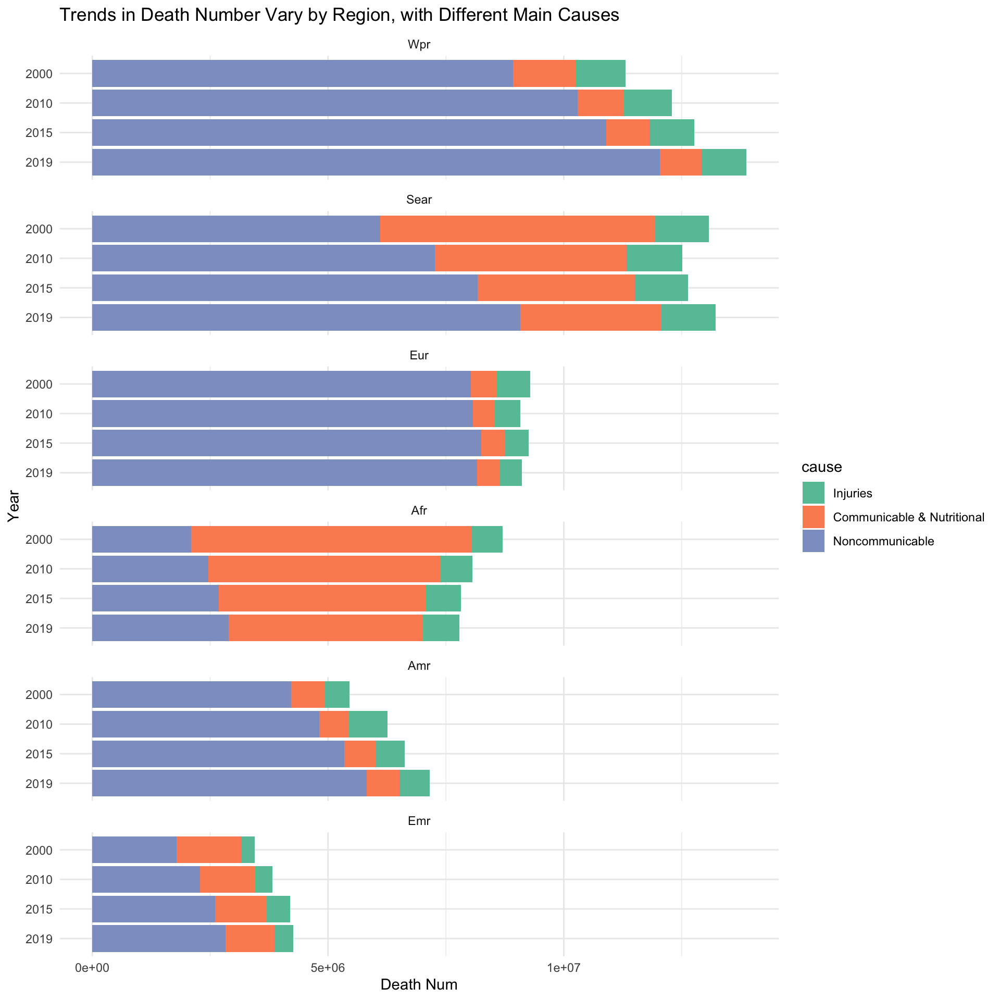
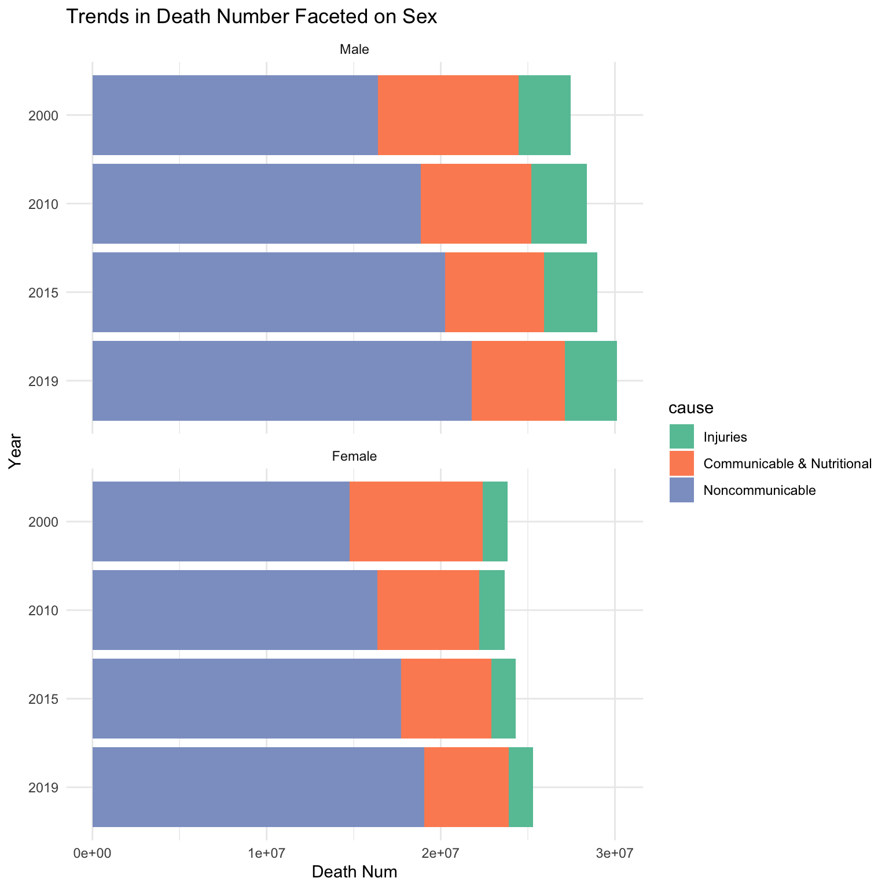

3.1.1 General Trend of Death Rate and Life Expectancy Over Time
First we will look at the general trend of death rate and life expectancy over time, globally and regionally, then compare between regions.
Code
data <-read.csv('data/clean/dataset1.csv')data <- data[data$Indicator %in%c('nMx - age-specific death rate between ages x and x+n','ex - expectation of life at age x'), ]data <- data[ , c('Indicator', 'Location', 'Period', 'Dim1', 'Dim2', 'FactValueNumeric')]# change column namescolnames(data) <-c('Indicator', 'Location', 'Year', 'Sex', 'Age', 'Value')# shorten indicators namesdata <- data %>%mutate(Indicator =ifelse(Indicator =='ex - expectation of life at age x', 'life_exp_age',ifelse(Indicator =='nMx - age-specific death rate between ages x and x+n', 'death_rate_age', Indicator)))# change year to be factorsdata$Year <-factor(data$Year, levels =c('2000','2005',"2010",'2015',"2019"))
Code
# Aggregate Death rate in each yeardeath_rate_agg <- data %>%filter(Indicator =='death_rate_age') %>%group_by(Year, Location) %>%summarise(AverageDeathRate =mean(Value))
`summarise()` has grouped output by 'Year'. You can override using the
`.groups` argument.
Code
# Order regions by increasing average death rateordered_regions <- death_rate_agg %>%group_by(Location) %>%summarise(AvgDeathRate =mean(AverageDeathRate)) %>%arrange(AvgDeathRate) %>%pull(Location)# Bar chart for death rate of each region over yearsggplot(death_rate_agg, aes(x = Year, y = AverageDeathRate, fill =reorder(Location, AverageDeathRate))) +geom_bar(stat ='identity', position ='dodge') +scale_fill_brewer(palette="Paired") +labs(title ="Death Rate of Each Region Over Years",x ="Year",y ="Average Death Rate",fill ="Region")
In 2000, death rate ranks from low to high as Americas (0.021), Europe, Western Pacific, Eastern Mediterranean, South-East Asia, and Africa (0.041), and the average difference between regions is 0.001. While in 2019, the rank from low to high becomes Americas (0.019), Europe, Western Pacific, South-East Asia, Eastern Mediterranean, and Africa (0.031). The gap between regions also becomes smaller, espacially Americas and Europe (almost the same).
One noticeable thing is that South-East Asia’s death rate drops greater than Eastern Mediterranean, and became the 4th rank since 2010. This also corresponds with the rapid economic and social development of South-East Asia in the past decades.
Comparing the change in death rate, we observe that Africa has the greatest decrease in death rate about 0.01, while Americas has the smallest decrease in death rate about 0.002, which is 1/5 of Africa’s death rate change.
Globally, death rate presents a consistent decreasing trend from 2000 to 2019, and drops from 0.029 to 0.021 by 0.008. Americas, Europe, Western Pacific have death rates lower than the global level, while South-East Asia, Eastern Mediterranean, and Africa have death rates higher than the global level.
Code
# Aggregate life expectancy in each yearlife_exp_birth <- data %>%filter(Indicator =='life_exp_age'& Age =='<1 year') %>%group_by(Year, Location) %>%summarise(AvgLifeExpBirth =mean(Value))
`summarise()` has grouped output by 'Year'. You can override using the
`.groups` argument.
Code
# Order in ascending orderordered_regions <- life_exp_birth %>%group_by(Location) %>%summarise(AvgLifeExpBirth =mean(AvgLifeExpBirth)) %>%arrange(AvgLifeExpBirth) %>%pull(Location)# Bar chart for life expectancy of each region over yearsggplot(life_exp_birth, aes(x = Year, y = AvgLifeExpBirth, fill =reorder(Location, AvgLifeExpBirth))) +geom_bar(stat ='identity', position ='dodge') +scale_fill_brewer(palette="Paired") +labs(title ="Life Expectancy of Each Region Over Years",x ="Year",y ="Average Life Expectancy at Birth",fill ="Region")
Compared to death rate, differences in life expectancy across region is smaller. In 2000, the rank of life expectancy from low to high is Africa (52), South-East Asia, Eastern Mediterranean, Western Pacific, Europe, and Americas (72). While in 2019, the rank became Africa (63), Eastern Mediterranean, South-East Asia, Americas, Western Pacific, and Europe (79).
Life expectancy of South-East Asia caught up and surpassed that of Eastern Mediterranean since 2005, while life expectancy of Americas fell behind Western Pacific and Europe since 2010. This can be explained by the rapid development of South-East Asia and problems such as obesity in Americas.
Looking at change rates, Africa’s life expectancy increase by 20 in the past 20 years, which is the biggest among all regions. Americas’ life expectancy rises by 6. Eastern Mediterranean’s life expectancy only rises by 2, which is the smallest change among all regions.
Globally, life expectancy keeps rising over years, and rose from 66 to 72. Americas, Europe, Western Pacific have life expectancy higher than the global level, while South-East Asia, Eastern Mediterranean, and Africa have life expectancy lower than the global level.
According to the 2 side-by-side bar charts above, we can observe a general decreasing death rate and increasing life expectancy from 2000 to 2019. The change of developed regions, such as Americas and Europe is smaller than developing regions such as Africa and South-East Asia. This shows that economic and social developments bring more improvements in people’s well being to less-developed regions, especially Africa.
3.1.2 Effect of Sex on Death Rate and Life Expectancy
Then we will look at whether death rate and life expectancy differ by sex globally and regionally.
Code
region_data <- data %>%filter(Location !='(WHO) Global')global_data <- data %>%filter(Location =='(WHO) Global')ggplot(global_data, aes(x = Year, y = Value, fill = Sex)) +geom_bar(stat ='identity', position ='dodge') +facet_wrap(~Indicator, scales ="free_y") +scale_fill_brewer(palette="Set2") +labs(title ="Comparison of Death Rate and Life Expectancy by Sex Over Years",x ="Year",y ="Value",fill ="Sex")
Globally, we can observe that death rate of male is higher than that of female, and in turn, life expectancy of male is smaller than that of female. The differences of death rate and life expectancy between two genders remains generally constant, without significant variations over time. On average, male death rate is 0.004 higher than female, and male life expectancy is 4-5 lower than female.
Code
ggplot(region_data, aes(x = Year, y = Value, fill = Sex)) +geom_bar(stat ='identity', position ='dodge') +facet_grid(rows =vars(Indicator), cols =vars(Location), scales ="free_y") +scale_fill_brewer(palette="Set2") +labs(title ="Comparison of Death Rate and Life Expectancy by Sex and Region Over Years",x ="Year",y ="Value",fill ="Sex") +theme(plot.title =element_text(size =12),axis.title.x =element_text(size =8),axis.title.y =element_text(size =8),axis.text.x =element_text(angle =90, size=6,hjust=1),axis.text.y =element_text(size =6),legend.title =element_text(size =6),legend.text =element_text(size =6))
When faceting by regions, we can observe some patterns here. Western Pacific has the greatest difference in death rate between male and female, and the big difference persists over time. Eastern Mediterranean has the smallest gap in death rate between male and female, and the gap gets smaller from 2000 to 2019. Looking at life expectancy, Europe has the biggest gap between genders, with the gap becomes smaller over time, and South-East Asia has the smallest gap.
To sum up, male has higher death rate and lower life expectancy than women. The effect has the same direction in each region, but the magnitude is different. Also the effect does not appear to change significantly over time.
3.1.3 Death Rate Over Age Groups
Further, we are interested in the distribution of death rate over age groups.
Code
death_rate_global <- global_data %>%filter(Indicator =='death_rate_age')# Order age groupsage_order <-c("<1 year", "1-4 years", "5-9 years", "10-14 years", "15-19 years", "20-24 years", "25-29 years", "30-34 years", "35-39 years", "40-44 years", "45-49 years", "50-54 years", "55-59 years", "60-64 years", "65-69 years", "70-74 years", "75-79 years", "80-84 years", "85+ years")# Order in datasetdeath_rate_global$Age <-factor(death_rate_global$Age, levels = age_order)# Plot with the specified orderggplot(death_rate_global, aes(x = Age, y = Value)) +geom_bar(stat ='identity', position ='dodge', color ='blue', fill ="lightblue") +labs(title ="Death Rate by Age Group",x ="Age Group",y ="Death Rate") +theme(plot.title=element_text(hjust=0.5),axis.text.x =element_text(angle =90, size=8, hjust=1))
Looking at the global trend, death rate increases with age after 4-year-old. This is reasonable since infants are more vulnerable to disease, which results in a high death rate of 0.055. After the infant stage, death rate increases with age from 0.001 at 5-9 years to 0.21 at 85+ years. As human grow up, we have more interactions with the world, leading to higher risk of accidents; our cells get damaged by injury, stress, and DNA mutations, leading to higher risk of disease. Therefore, death rate rises continuously.
Code
death_rate_region <- region_data %>%filter(Indicator =='death_rate_age')death_rate_region$Age <-factor(death_rate_region$Age, levels = age_order)ggplot(death_rate_region, aes(x = Age, y = Value)) +geom_bar(stat ='identity', position ='dodge', color ='blue', fill ="lightblue") +labs(title ="Death Rate by Age Group",x ="Age Group",y ="Death Rate") +theme(plot.title=element_text(hjust=0.5),axis.text.x =element_text(angle =90, size=8,hjust=1))+facet_wrap(~ Location)
When we facet by region, we observe different death rate patterns. First of all, infant mortality (death rate of <1 year group) is high in Africa (0.11), South-East Asia (0.07), and Eastern Mediterranean (0.07), while infant mortality is low in Americas, Europe, and Western Pacific, which is around 0.025. Second, death rate of 85+ group of Americas and Europe (<0.2) is lower than that of South-East Asia and Eastern Mediterranean (around 0.2), and death rate of 85+ group of Africa and Western Pacific is the higher, around 0.25.
The difference in infant mortality can be explained by health care infrastructure and medical practices. In Africa, maternity care might be not established, and new-born babies also lack of medical care, leading to high death rate of the <1 year group. While in developed regions, pregnant women and infants are more likely to receive proper health care, leading to lower death rate.
Overall, death rate is closely related to the establishment of the health care system. So it is reasonable that death rate in developing regions is higher than that of developed regions.
3.2 Data Source 2:
3.2.1 General Trend for Death Cause Proportions Over Time
df_2_long_1<-df_2_long %>%filter(level ==1)df_2_long_1$cause <-factor(df_2_long_1$cause, levels =c("Injuries","Communicable & Nutritional","Noncommunicable"))ggplot(df_2_long_1,aes(x = year, y = death_num, fill = cause)) +geom_bar(stat ="identity") +scale_fill_brewer(palette="Set2") +labs(title ="Global Deaths Continue to Rise, with a Rising Share of Noncommunicable Factors",x ="Year",y ="Death Num") +theme_minimal()
First, we analyze the change over time in the number of deaths of different causes on a global scale. It is noted that there is an upward trend in the number of deaths globally. In particular, deaths from non-communicable diseases are the main source of the rise in the number of deaths from all factors, while deaths from communicable diseases and problems such as malnutrition show a downward trend. The death number of injuries is relatively stable and hardly changes over time.
Code
df_2_long_1<-df_2_long %>%filter(level ==1)df_2_long_1$year <-factor(df_2_long_1$year, levels =c("2019","2015", "2010","2000"))df_2_long_1$region <-factor(df_2_long_1$region, levels =c("Wpr","Sear","Eur",'Afr','Amr','Emr'))df_2_long_1$cause <-factor(df_2_long_1$cause, levels =c("Injuries","Communicable & Nutritional","Noncommunicable"))ggplot(df_2_long_1,aes(x = year, y = death_num, fill = cause)) +geom_bar(stat ="identity") +scale_fill_brewer(palette="Set2") +labs(title ="Trends in Death Number Vary by Region, with Different Main Causes",x ="Year",y ="Death Num") +facet_wrap(~region, ncol =1)+coord_flip() +theme_minimal()

In the labels above, Afr is short for African Region, Amr is short for Region of the Americas, Sear is short for South-East Asia Region, Eur is short for European Region, Emr is short for Eastern Mediterranean Region, and Wpr is short for Western Pacific Region. We will also use these abbreviations in the following analysis.
In terms of specific regions, Wpr and Sear had the highest number of deaths, while Amr and Emr had the lowest. In terms of changes in the number of deaths by region, Wpr, Emr and Amr show an upward trend, Afr shows a downward trend, and Sear and Eur remain more or less unchanged. For Wpr, Emr and Amr, where the number of deaths increased, noncommunicable disease was the most important source of increase. For Afr, where the overall number of deaths has declined, it is noted that a significant decline in deaths due to infectious diseases and malnutrition is the main reason for the overall decline, which even outweighs the rise in noncommunicable factors, resulting in a downward trend in the overall number of deaths.
Code
df_2_long_1<-df_2_long %>%filter(level ==1)df_2_long_1$year <-factor(df_2_long_1$year, levels =c("2019","2015", "2010","2000"))df_2_long_1$region <-factor(df_2_long_1$region, levels =c("Wpr","Sear","Eur",'Afr','Amr','Emr'))df_2_long_1$cause <-factor(df_2_long_1$cause, levels =c("Injuries","Communicable & Nutritional","Noncommunicable"))ggplot(df_2_long_1,aes(x = year, y = death_num, fill = cause)) +geom_bar(stat ="identity") +scale_fill_brewer(palette="Set2") +labs(title ="Trends in Death Number Faceted on Sex",x ="Year",y ="Death Num") +facet_wrap(~sex, ncol =1)+coord_flip() +theme_minimal()

By gender, the overall number of deaths is higher for males than for females, and both show an upward trend over time. It is noted that for both gender groups, the number of deaths from noncommunicable disease is increasing, and the number of deaths from both communicable and nutritional causes is decreasing. It is also noteworthy that there are significantly more deaths from injuries and noncommunicable disease among males than females.
3.2.2 A More Nuanced Division of Causes
Below, we will analyze the causes of death more specifically. In the above analysis, we simply categorized the causes of death into three main categories-communicable & nutritional, noncommunicable, and injuries-and now we will break them down more closely to find the major causes of death in each category.
The following objects are masked from 'package:openintro':
ethanol, lsegments
Code
filtered_data %>%group_by(cause,age_group2) %>%mutate(death_sum =sum(death_num)) %>%ggplot( aes(x =reorder(cause, death_sum), y = death_sum, color = age_group2)) +geom_point(position =position_dodge(width =0), size =2.5 )+facet_grid(father_cause ~ ., scales ="free_y",space ="free_y") +coord_flip() +scale_y_log10()+labs(title ="Cleveland Dotplot - Main 2nd-level Causes and Differences on Age Groups",x ="Cause",y ="Death Number",color ="Age Group")+theme_minimal()+theme(strip.text.y =element_text(angle =90, hjust =0.5,size=9))
Warning: Transformation introduced infinite values in continuous y-axis
Among noncommunicable diseases, Cardiovascular diseases, Malignant neoplasms and Respiratory diseases are the top 3 causes for death. Among communicable & nutritional reasons, Infectious and parasitic diseases, Neonatal conditions and Respiratory Infectious are the top 3 causes for death. For injuries, unintentional injuries account for a higher proportion of deaths than intentional injuries.
Also note that the percentage of age in the different factors varies, an observation that is the same as the mosaic plot findings above.
Code
filtered_data %>%group_by(cause,region) %>%mutate(death_sum =sum(death_num)) %>%ggplot( aes(x =reorder(cause, death_sum), y = death_sum, color = region)) +geom_point(position =position_dodge(width =0), size =2.5 )+facet_grid(father_cause ~ ., scales ="free_y",space ="free_y") +coord_flip() +scale_y_log10()+labs(title ="Cleveland Dotplot - Main 2nd-level Causes and Differences on Regions",x ="Cause",y ="Death Number",color ="Region") +theme_minimal()+theme(strip.text.y =element_text(angle =90, hjust =0.5,size=9))
Warning: Transformation introduced infinite values in continuous y-axis
Among the differences in the regional distribution of the different factors, it is noted that Sear, Eur and Wpr contribute the highest number of deaths in noncommunicable causes, while Afr and Sear have a larger share of the dead in communicable as well as nutritional causes.
3.2.3 Interactive Distribution between Age, Region, Gender and Death Cause Groups
The following analysis of the 2019 data analyzes whether there is an interaction relationship between the number of deaths in different regions, ages, and sexes.
First note that the age composition of deaths is characterized differently across region. Afr and Emr have more young people in their death cohorts. Especially for Afr, the number of deaths under 15 accounts for almost half of the overall number of deaths, which may be related to the health care conditions in the region. For Amr, Wpr and Eur, on the other hand, the age group over 69 accounted for the majority of the overall number of deaths.
It is also noted that the age distribution within the groups of people who died due to different causes varies. The adolescent group accounts for a larger proportion of deaths due to infectious diseases and malnutrition, while the 70+ age group accounts for a larger proportion of deaths due to noncommunicable diseases. Deaths from accidental injuries and deaths are almost evenly distributed across age groups.
The gender distribution is almost even across age and regional divisions.
3.2.4 Comparison of the Distribution of Causes of Death by Region - Analysis of Similarities and Differences
Finally, we will analyze the similarity of the distribution of causes of death in different geographic areas, with Principal Component Analysis (PCA) method.
`summarise()` has grouped output by 'cause'. You can override using the
`.groups` argument.
Code
df_2_shorter <- df_2_long_filtered %>%pivot_wider(names_from = cause,values_from = death_num, values_fill=0)constant_columns <-sapply(df_2_shorter, function(col) length(unique(col)) ==1)df_2_shorter <- df_2_shorter[, !constant_columns]# Replace 0 with a very small numberdf_2_shorter[df_2_shorter ==0] <-1e-10# PCA biplotpca_plot<-draw_biplot(df_2_shorter,point_size=1)+scale_x_continuous(limits=c(-3,3))+scale_y_continuous(limits=c(-4,3))+theme_minimal()+ggtitle('PCA Analysis - Similarity Comparison across Regions')
Scale for x is already present.
Adding another scale for x, which will replace the existing scale.
Scale for y is already present.
Adding another scale for y, which will replace the existing scale.
Code
ggplotly(pca_plot)
Firstly, according to the data of 2019, Eur, Amr and Emr are more similar in the distribution of causes of death, with a lower number of deaths in all three major categories of causes. Wpr has more deaths due to noncommunicable diseases, Sear has more deaths due to injuries, and Afr has more deaths due to communicable and nutritional diseases.
`summarise()` has grouped output by 'cause'. You can override using the
`.groups` argument.
Code
df_2_shorter <- df_2_long_filtered %>%pivot_wider(names_from = cause,values_from = death_num, values_fill=0)constant_columns <-sapply(df_2_shorter, function(col) length(unique(col)) ==1)df_2_shorter <- df_2_shorter[, !constant_columns]# Replace 0 with a very small numberdf_2_shorter[df_2_shorter ==0] <-1e-10# PCA biplotpca_plot<-draw_biplot(df_2_shorter,point_size=1)+scale_x_continuous(limits=c(-3,3))+scale_y_continuous(limits=c(-4,3))+theme_minimal()+ggtitle('PCA Analysis - Similarity Comparison across Regions over Time')
Scale for x is already present.
Adding another scale for x, which will replace the existing scale.
Scale for y is already present.
Adding another scale for y, which will replace the existing scale.
Code
ggplotly(pca_plot)
Above, the data for 2000 and 2019 are compared to see if the causes of death in different regions have changing trends over the two decades. Notice that the distributions for Eur, Amr, and Emr remain relatively similar, and that Emr and Amr show the same changing trends, i.e., an increase in the share of deaths from noncommunicable diseases and a decrease in deaths from communicable. For Afr, Sear and Wpr, despite the very different characteristics of the causes of death, they show the same trend of change from 2000 to 2019 (same direction of movement for all three points). They all had a decrease in the share of deaths due to communicable & nutritional reasons, and an increase in the share of noncommunicable diseases.